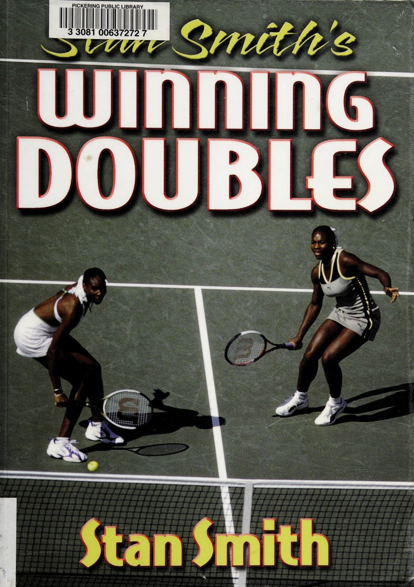
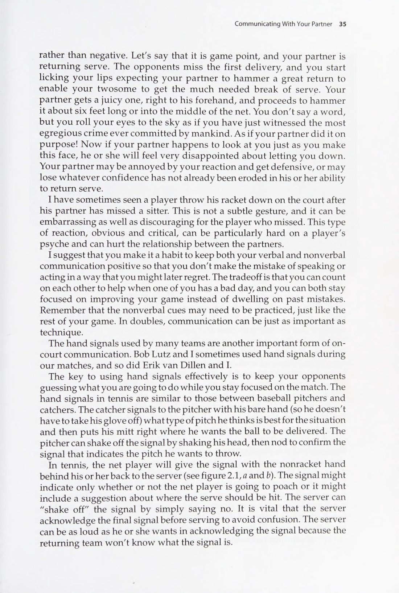
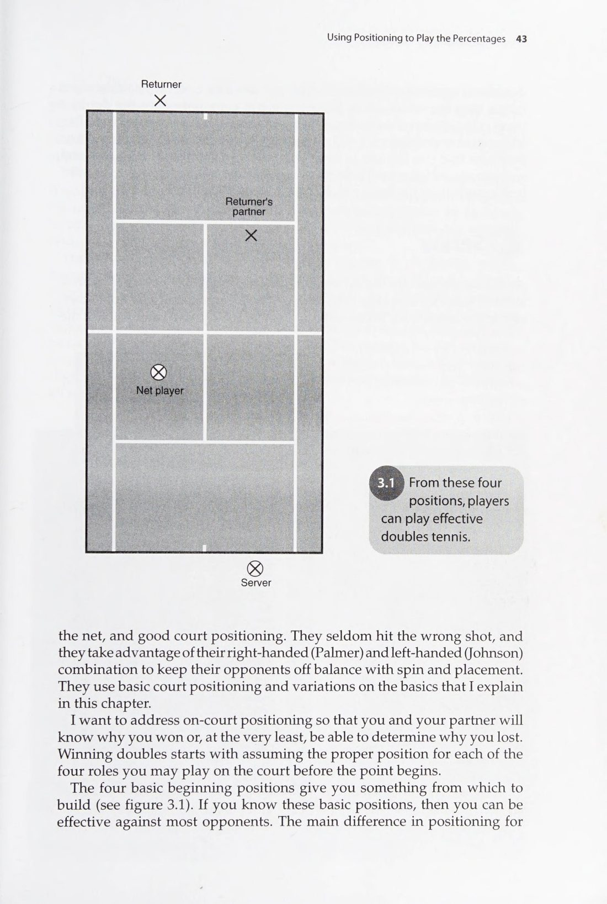
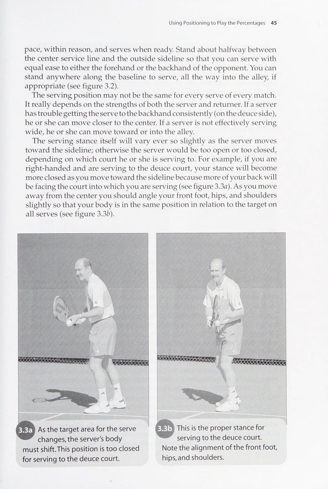
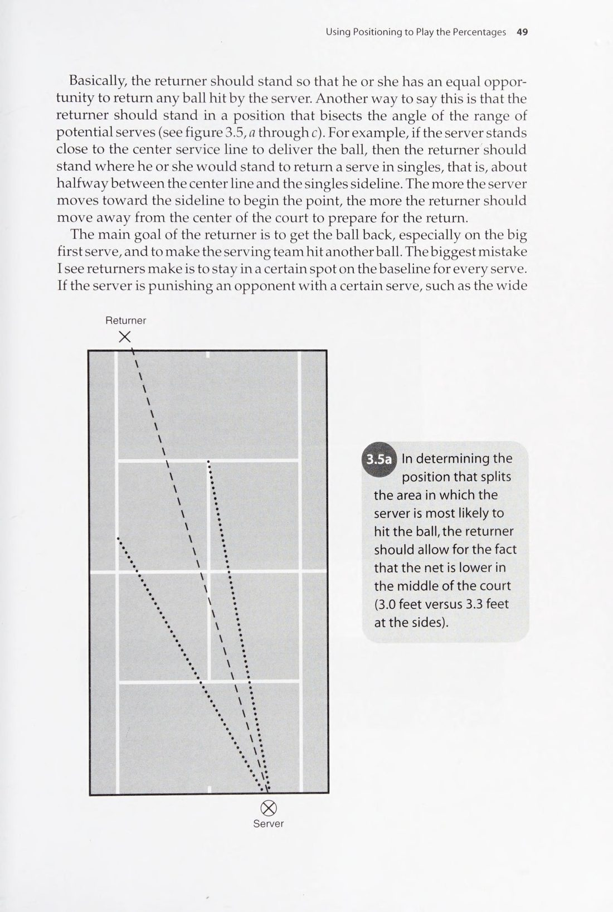
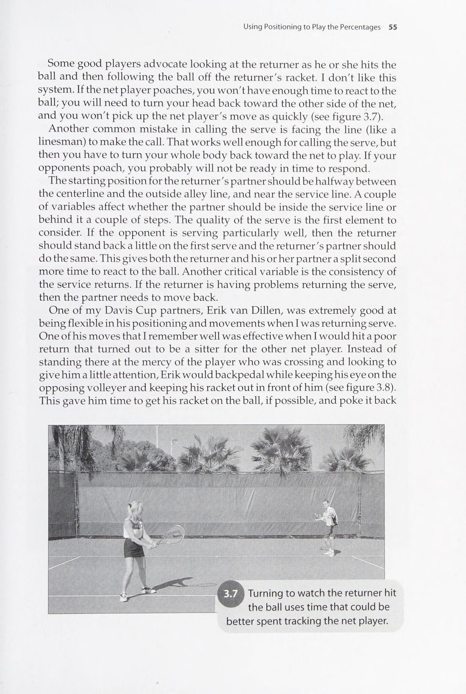
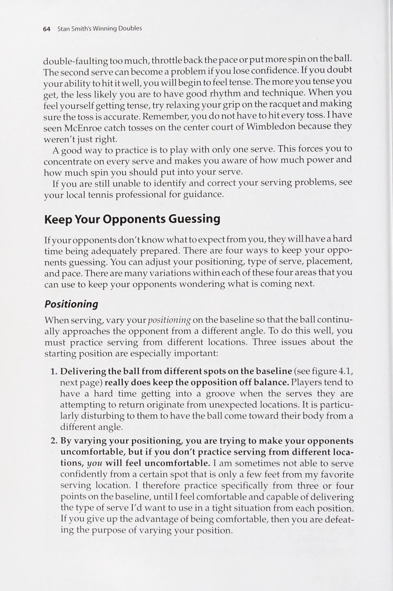

Tác phẩm cẩm nang chiến thuật đánh đôi thực chiến kinh điển của huyền thoại Stan Smith
Lời Giới Thiệu: Nghệ Thuật Đánh Đôi Đỉnh Cao
Stan Smith — Thành viên Đại sảnh Danh vọng Quần vợt Quốc tế, Cựu Số 1 Thế Giới
Hành Trình Trải Nghiệm Qua 39 Danh Hiệu Đỉnh Cao
Trong suốt sự nghiệp thi đấu đỉnh cao của mình, tôi đã may mắn giành được danh hiệu vô địch đơn tại Wimbledon và US Open. Nhưng niềm đam mê sâu sắc nhất, những kỷ niệm xúc động nhất và những bài học thể thao giá trị nhất của tôi luôn gắn liền với nội dung đánh đôi.
Cùng với người đồng đội Bob Lutz, chúng tôi đã kề vai sát cánh qua hàng trăm trận chiến khốc liệt, đoạt 5 danh hiệu Grand Slam đôi nam và nhiều lần bảo vệ thành công chiếc cúp Davis Cup danh giá cho nước Mỹ. Quần vợt đánh đôi mang lại một thứ cảm xúc độc nhất vô nhị mà đánh đơn không bao giờ có được: Đó là niềm hạnh phúc khi cùng chia sẻ chiến thắng, là sự đồng cảm sâu sắc khi dìu nhau vượt qua những thời khắc bão giông và là sợi dây liên kết vô hình giữa hai tâm hồn cùng hòa chung một nhịp đập chiến thuật.
Cuốn sách "Stan Smith's Winning Doubles" được viết ra nhằm mang lại cho bạn đọc cái nhìn toàn diện, hiện đại và thực tế nhất về cách xây dựng một đội đôi chiến thắng từ những bước đi chập chững đầu tiên cho đến các trận tranh cúp vô địch đỉnh cao.
Chương 1: Xây Dựng Một Đội Đôi Chiến Thắng
Building a Winning Doubles Team
Khảo Sát Bản Thân: Thấu Suốt Điểm Mạnh & Điểm Yếu
Bước khởi đầu quan trọng nhất để xây dựng một đội đôi bất khả chiến bại không phải là đi tìm một ngôi sao sáng nhất, mà là việc tự đánh giá bản thân một cách trung thực và khách quan. Bạn cần phải biết chính xác mình sở hữu những vũ khí nào và đâu là những lỗ hổng kỹ chiến thuật cần được bảo bọc.
Hãy lập một danh sách kiểm tra trên 4 khía cạnh:
1. Năng lực giao bóng: Bạn có cú giao bóng bạt uy lực hay cú giao bóng xoáy kick serve ổn định? Bạn có khả năng giao bóng lên lưới áp sát ngay từ cú đánh đầu tiên hay cảm thấy tự tin hơn khi đứng lại cuối sân?
2. Kỹ năng trả giao bóng: Cú thuận tay hay trái tay của bạn là cú đánh trả bóng đáng tin cậy hơn? Bạn có khả năng cắt chìm quả bóng vào chân đối thủ hay thường tung những cú lốp bóng giải vây?
3. Trình độ cận chiến trên lưới: Phản xạ bắt volley của bạn ở cự ly gần như thế nào? Bạn có cảm giác bóng nhạy bén để bắt những quả volley bỏ nhỏ tinh tế hay sở hữu cú đập smash dứt điểm uy lực?
4. Bản lĩnh tâm lý thi đấu: Bạn là người dễ bốc hỏa khi bị dẫn điểm hay là người luôn giữ được sự điềm tĩnh lạnh lùng ở những thời khắc nghẹt thở?
Lựa Chọn Bạn Cặp: Sự Hòa Hợp Của Hai Mảnh Ghép Đối Lập
Một trong những định lý kinh điển của tôi là: Đội đôi mạnh nhất không phải là đội gồm hai tay vợt giỏi nhất, mà là đội có hai tay vợt kết hợp ăn ý nhất.
Sự kết hợp hoàn hảo thường đến từ các yếu tố bổ trợ:
- Người tay trái và người tay phải: Đây là sự kết hợp vàng trong làng đánh đôi. Khi một tay vợt thuận tay trái kết hợp cùng một tay vợt thuận tay phải, cả hai đều có thể sử dụng cú thuận tay đầy uy lực để kiểm soát toàn bộ khu vực trung lộ và bao quát hai bên hành lang sân.
- Người tấn công bùng nổ và người phòng ngự kiên cường: Một người thích lao lên dập lưới kết liễu điểm số kết hợp với một người kiên nhẫn bám vạch cuối sân trả bóng bền bỉ sẽ tạo nên một cấu trúc công thủ toàn diện khó bị xuyên thủng.
- Thấu hiểu và tôn trọng cá tính lẫn nhau: Bạn và bạn cặp không nhất thiết phải là đôi bạn thân thiết ngoài đời, nhưng trên sân đấu, hai bạn phải dành cho nhau sự tin tưởng và tôn trọng tuyệt đối.
Chương 2: Nghệ Thuật Giao Tiếp Cùng Bạn Cặp
Communicating With Your Partner
Ngôn Ngữ Cơ Thể Tích Cực: Nền Tảng Của Sự Tự Tin
Trong thi đấu đánh đôi, những gì bạn thể hiện qua ánh mắt, bước đi và cử chỉ bàn tay đôi khi mang sức nặng gấp mười lần những lời nói phát ra thành tiếng. Khi bạn cặp của bạn phạm lỗi kép hoặc đánh hỏng một quả bóng ngon ăn trước lưới, sự phản ứng tức thì của bạn sẽ quyết định cục diện của cả set đấu.
Nếu bạn thở dài, cúi gằm mặt hoặc chống tay vào hông với ánh mắt chán nản, bạn vừa gửi một thông điệp tiêu cực tàn phá sự tự tin của đồng đội. Ngược lại, hãy lập tức bước lại gần, nở một nụ cười ấm áp, thực hiện cái chạm vợt dứt khoát và nói một câu ngắn gọn: "Không sao, quả sau mình làm lại!". Hành động nhỏ này giúp giải phóng áp lực tâm lý và tái tạo nguồn năng lượng chiến đấu mạnh mẽ cho đồng đội.
Hệ Thống Ám Hiệu Bàn Tay Sau Lưng (Hand Signals)
Giao tiếp chiến thuật không thể diễn ra bằng lời nói lớn tiếng trước mặt đối thủ. Một cặp đôi đẳng cấp luôn sở hữu một bộ ám hiệu bàn tay bí mật được người đứng lưới ra dấu sau lưng trước mỗi pha giao bóng.

Sơ đồ 2.1: Hệ thống Ám Hiệu Bàn Tay (Hand Signals) — Người đứng lưới ra dấu sau lưng để thống nhất chiến thuật cắt bóng và hướng giao bóng.
Quy Ước Ám Hiệu Chuẩn Mực
Các ám hiệu cơ bản mà bạn và bạn cặp nên thống nhất:
1. Ngón trỏ chỉ xuống: Người đứng lưới sẽ lao sang trung lộ cắt bóng (Poach) ngay sau khi đối phương chạm bóng trả giao bóng.
2. Nắm đấm chặt: Người đứng lưới sẽ giữ nguyên vị trí (Stay) để bảo vệ hành lang dọc dây của mình.
3. Bàn tay xòe ngang: Người đứng lưới sẽ nhấp giả bước chân sang trung lộ để đánh lạc hướng đối thủ rồi quay về vị trí ban đầu (Fake).
4. Ngón cái chỉ hướng: Báo cho người giao bóng biết nên giao bóng vào góc chữ T (trung tâm) hay mở rộng ra mang sườn ngoài biên.
Chương 3: Sử Dụng Vị Trí Để Thi Đấu Theo Định Luật Xác Suất
Using Positioning to Play the Percentages
Vị Trí Khởi Đầu Chuẩn Mực Của Bốn Tay Vợt
Trong đánh đôi, vị trí đứng trên sân là yếu tố quyết định tới hơn 70% sự thành bại của mỗi pha bóng trước khi cây vợt chạm vào quả bóng. Khi bạn đứng đúng vị trí, góc đánh nguy hiểm của đối thủ sẽ tự động bị thu hẹp lại; ngược lại, chỉ cần đứng lệch một bước chân, bạn sẽ mở toang một khoảng trống chết người để đối thủ khai thác.

Sơ đồ 3.1: Vị trí Xuất Phát Chuẩn Mực (Basic Doubles Positioning) — Bố trí cự ly tối ưu của Người giao bóng, Người đỡ bóng và hai bạn cặp trên lưới.
Kiểm Soát Góc Đánh Hình Học & Bao Quát Hành Lang
Mặt sân đánh đôi có kích thước 36 x 78 feet. Nhiệm vụ của cặp đôi không phải là chạy theo quả bóng mà là di chuyển đón đầu để khép kín góc đánh hình học lớn nhất của đối phương.

Sơ đồ 3.2: Phạm Vi Bao Quát Sân (Court Coverage) — Sự phối hợp ăn ý giữa hai người chơi để bảo vệ hành lang và khép kín góc đánh chéo sân.

Sơ đồ 3.3: Góc Đánh Hình Học (Angle of Return) — Tận dụng quy luật phản xạ góc để triệt tiêu các pha tấn công nguy hiểm của đối phương.
Tầm Nhìn & Điểm Tập Trung Thị Giác Của Người Đứng Lưới
Một sai lầm rất phổ biến của người đứng lưới phong trào là quay đầu lại nhìn đồng đội giao bóng hoặc quay đầu dõi theo quả bóng bay. Hành động này khiến bạn bị mất thăng bằng và mất đi khoảng thời gian 0.3 giây quý giá để phản xạ đón cú trả bóng của đối thủ.
Stan Smith nhấn mạnh quy tắc thị giác thép: Mắt của người đứng lưới phải luôn dán chặt vào ngực và mặt vợt của người trả giao bóng đối phương. Bằng cách đọc hướng mở vợt và tư thế vai của đối thủ, bạn sẽ phán đoán chính xác đường bóng trả lại trước khi bóng rời mặt vợt một phần mười giây.

Sơ đồ 3.4: Điểm Tập Trung Thị Giác (Net Player Focus) — Giữ vợt cao phía trước ngực và tập trung đọc động tác của đối thủ bên kia lưới.
Chương 4: Tối Đa Hóa Sức Mạnh Cú Giao Bóng
Maximizing Your Serve
Vị Trí Đứng Giao Bóng Trên Vạch Cuối Sân
Vị trí bạn đặt chân khi bắt đầu thực hiện cú giao bóng sẽ định hình toàn bộ hướng bay của quả bóng và góc đánh trả lại của đối thủ.

Sơ đồ 4.1: Các Điểm Xuất Phát Giao Bóng (Serving Positions on the Baseline) — Tùy chỉnh vị trí đứng để tạo góc giao bóng tối ưu.
Tối Ưu Hóa Tỷ Lệ Bóng Một Vào Sân
Trong quần vợt đánh đôi chuyên nghiệp, tỷ lệ giao bóng một vào sân (First-Serve Percentage) là chỉ số thống kê tương quan chặt chẽ nhất với tỷ lệ thắng trận. Nếu tỷ lệ bóng một của bạn rơi xuống dưới 60%, đội của bạn sẽ phải đối mặt với nguy cơ bị bẻ game giao bóng cực kỳ lớn.
Để nâng cao tỷ lệ bóng một mà vẫn giữ được tính sát thương:
- Sử dụng cú giao bóng xoáy cuộn (Kick Serve): Độ xoáy cuộn đưa quả bóng bay vòng cung an toàn qua mép lưới cao từ 40 đến 50 cm, sau đó nảy bùng cao vào góc yếu trái tay của đối thủ.
- Sử dụng cú giao bóng xoáy ngang (Slice Serve): Quả bóng xoáy chuồi ngang đẩy người đỡ bóng dạt xa ra ngoài mép sân đơn, mở toang trung lộ cho người bạn cặp trên lưới tung đòn kết liễu.
- Không bao giờ ham muốn cú giao bóng ăn điểm trực tiếp (Ace) một cách mù quáng: Cú giao bóng hoàn hảo trong đánh đôi là cú giao bóng tạo ra quả trả bóng yếu ớt để bạn cặp trên lưới bắt volley dứt điểm ngay lập tức.
Chương 5: Vô Hiệu Hóa Cú Giao Bóng Bằng Quả Trả Đầy Uy Lực
Defusing the Serve With a Potent Return
Nhiệm Vụ Sống Còn Của Người Trả Giao Bóng
Trong quần vợt đánh đôi, người trả giao bóng không có mục tiêu tung ra những cú đánh bạt bóng ăn điểm trực tiếp hào nhoáng như trong đánh đơn. Nhiệm vụ tối thượng của bạn là đưa quả bóng vào cuộc an toàn và tước đoạt lợi thế chủ động của đội giao bóng.
Stan Smith đúc kết nguyên tắc vàng: Quả trả giao bóng thành công nhất là quả bóng buộc người giao bóng đang dâng lên phải thực hiện cú volley đầu tiên ở tầm dưới đầu gối. Khi đối thủ phải cúi gập người vớt quả bóng từ dưới mép lưới lên, bóng buộc phải bay theo quỹ đạo hướng lên trời — tạo cơ hội ngàn vàng để bạn cặp của bạn trên lưới lập tức nhảy sang dứt điểm kết liễu điểm số.
Ba Phương Án Trả Giao Bóng Chiến Lược
Tùy thuộc vào vị trí và tính chất của quả giao bóng, người đỡ bóng cần linh hoạt vận dụng:
1. Quả trả bóng chéo sân cắm chân (Crosscourt Return): Đây là sự lựa chọn an toàn và hiệu quả nhất trong 80% các trường hợp. Đường chéo sân có chiều dài lớn nhất và đi qua phần võng thấp nhất của mép lưới, triệt tiêu tối đa nguy cơ tự đánh bóng hỏng.
2. Quả trả bóng dọc dây vào hành lang (Down the Alley): Chỉ sử dụng khi người đứng lưới đối phương có thói quen nhảy sang cắt bóng quá sớm hoặc khi bạn nhận thấy họ mất cảnh giác. Cú đánh dọc dây bất ngờ sẽ trừng phạt thói quen vồ bóng ẩu của đối thủ và buộc họ phải đứng yên ở phần sân của mình trong các pha bóng sau.
3. Cú lốp bóng trả giao bóng (Lob Return): Khi đối phương giao bóng lên lưới quá nhanh và áp sát mép lưới, một cú lốp bóng bổng chuẩn xác qua đầu người đứng lưới sẽ đảo ngược hoàn toàn cục diện trận đấu, đẩy đối thủ về thế phòng thủ bị động.
Chương 6: Kỹ Thuật Volley Kiểm Soát & Mở Rộng Góc Đánh
Executing Controlled Volleys and Angles
Nghệ Thuật Kiểm Soát Volley Bằng Sự Thăng Bằng Cơ Thể
Volley không phải là một cú đánh vung vợt lớn như cú bạt bóng từ cuối sân. Đó là một hành động chặn bóng (block) và đẩy tịnh tiến (punch) với sự tham gia của toàn bộ trọng tâm cơ thể.
Ba nguyên tắc kỹ thuật cốt lõi:
1. Động tác chuẩn bị cực ngắn: Đầu vợt không bao giờ được phép vượt ra phía sau mặt phẳng vai. Hãy giữ mặt vợt luôn ở phía trước tầm mắt để bạn có thể nhìn thấy cả quả bóng và mặt vợt cùng một lúc.
2. Cổ tay vững như bàn thạch: Tại thời điểm tiếp xúc bóng, khớp cổ tay phải được khóa chặt. Sự lỏng lẻo của cổ tay là nguyên nhân hàng đầu khiến mặt vợt bị xoay và quả bóng bay lệch hướng.
3. Bước chân chuyển giao trọng tâm: Luôn bước chân đối diện về phía trước khi tiếp xúc bóng để truyền toàn bộ động lượng cơ thể vào cú đánh, giúp quả bóng bay sâu và đầm tay mà không cần dùng sức cơ bắp quá nhiều.
Mở Rộng Góc Đánh: Kỹ Thuật Volley Cắt Góc (Angled Volleys)
Khi bạn đã áp sát trong phạm vi 1.5 đến 2 mét quanh mép lưới và đón được quả bóng cao hơn mép lưới, đừng đánh quả bóng thẳng về phía vạch cuối sân nơi đối thủ đang chờ sẵn. Hãy vận dụng kỹ thuật volley cắt góc sắc bén:
- Mở nhẹ mặt vợt và tiếp xúc vào phần ngoài của quả bóng để tạo độ xoáy ngang (side-spin).
- Đẩy quả bóng rơi chéo góc ngắn sát vạch biên đơn hoặc biên đôi phần sân đối diện. Quả bóng nảy ra xa khỏi sân sẽ buộc đối thủ phải bỏ cuộc vì cự ly di chuyển quá lớn.
- Thả bóng mềm tay (Touch / Drop Volley): Khi cả hai đối thủ đều lùi sâu sau vạch cuối sân để phòng ngự, hãy thả lỏng nhẹ các ngón tay tại thời Điểm tiếp xúc bóng để triệt tiêu lực đẩy, khiến quả bóng rơi lững lờ ngay sát mép lưới bên kia.
Chương 7: Luyện Tập Có Mục Đích & Hệ Thống Giáo Án Thực Chiến
Practicing With a Purpose
Phá Bỏ Thói Quen Tập Luyện Vô Định
Phần lớn người chơi phong trào bước ra sân tập với thói quen khởi động vài đường bóng bạt qua lại từ cuối sân rồi lập tức chia phe đánh trận tính điểm. Kiểu tập luyện tự phát này chỉ củng cố thêm những thói quen xấu và không bao giờ giúp bạn tiến bộ vượt bậc về mặt chiến thuật.
Stan Smith khuyến nghị: Một buổi tập đánh đôi chuyên nghiệp phải được cấu trúc thành các bài tập tình huống có mục tiêu định lượng rõ ràng:
1. Bài tập 2 chọi 2 cận chiến trên lưới (The Rapid-Fire Volley Game): Cả bốn tay vợt cùng đứng trên lưới cách nhau 4 mét và thực hiện các pha bóng volley liên tục ở tốc độ cao. Bài tập này rèn luyện phản xạ co duỗi cơ bắp dưới 0.3 giây và khả năng làm chủ cổ tay khi tiếp xúc bóng nhanh.
2. Bài tập mô phỏng cắt bóng (Poaching Drill): Người giao bóng thực hiện giao bóng, người trả bóng chỉ được phép đánh chéo sân, trong khi người đứng lưới phải bắt buộc nhảy sang cắt bóng ở 7 trong 10 quả bóng. Bài tập này giúp người đứng lưới triệt tiêu hoàn toàn sự e dè, do dự.
3. Bài tập trả bóng cắm chân (Target Return Drill): Đặt các mục tiêu (nón chóp hoặc hộp đựng bóng) tại khu vực cách vạch giao bóng 1 mét. Người trả giao bóng phải liên tục đưa quả bóng rơi chính xác vào khu vực này để rèn luyện độ chuẩn xác của cú cắt bóng trái tay.
Rèn Luyện Bản Lĩnh Dưới Áp Lực Điểm Số
Để chuẩn bị tâm lý cho các trận đấu căng thẳng, hãy áp dụng các thể thức thi đấu tập luyện có tính điểm đặc biệt:
- Thể thức "Bảo Vệ Game Giao Bóng" (Hold or Die): Đội giao bóng khởi đầu mỗi game ở tỷ số bất lợi 0-30 hoặc 15-40. Điều này buộc người giao bóng và bạn cặp trên lưới phải thi đấu với sự tập trung cao độ và không được phép phạm bất kỳ sai lầm nào.
- Thể thức "Thưởng Điểm Cho Cú Lên Lưới" (Bonus for Net Play): Bất kỳ điểm số nào kết thúc bằng một cú volley dứt điểm trên lưới sẽ được tính 2 điểm thay vì 1 điểm. Quy định này khuyến khích cả bốn tay vợt chủ động rời bỏ vạch cuối sân để dâng cao áp sát mặt lưới.